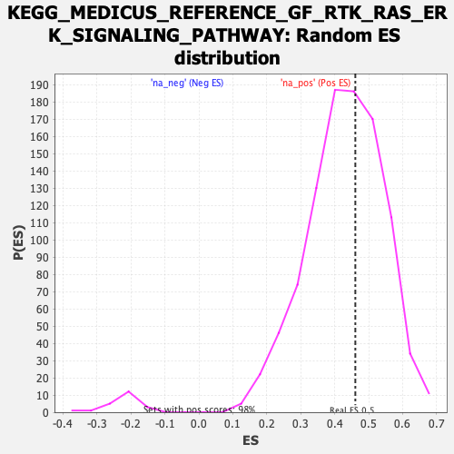

| | | Dataset | DGErank_significant |
| Phenotype | NoPhenotypeAvailable |
| Upregulated in class | na_pos |
| GeneSet | KEGG_MEDICUS_REFERENCE_GF_RTK_RAS_ERK_SIGNALING_PATHWAY |
| Enrichment Score (ES) | 0.4606307 |
| Normalized Enrichment Score (NES) | 1.0694158 |
| Nominal p-value | 0.41717792 |
| FDR q-value | 1.0 |
| FWER p-Value | 0.922 |
Table: GSEA Results Summary
Fig 1: Enrichment plot: KEGG_MEDICUS_REFERENCE_GF_RTK_RAS_ERK_SIGNALING_PATHWAY
Profile of the Running ES Score & Positions of GeneSet Members on the Rank Ordered List
| SYMBOL | RANK IN GENE LIST | RANK METRIC SCORE | RUNNING ES | CORE ENRICHMENT | | 1 | FGF8 | 931 | 14.886 | 0.0195 | Yes |
| 2 | FGF3 | 1071 | 14.374 | 0.1507 | Yes |
| 3 | PSPN | 1087 | 14.294 | 0.2994 | Yes |
| 4 | INS | 1255 | 13.597 | 0.4183 | Yes |
| 5 | FGF4 | 1582 | 8.573 | 0.4606 | Yes |
| 6 | FGF9 | 2498 | 3.855 | 0.3661 | No |
| 7 | SOS2 | 4930 | 2.455 | 0.0326 | No |
| 8 | FGF21 | 5179 | 2.362 | 0.0208 | No |
| 9 | FLT3 | 5242 | 2.343 | 0.0364 | No |
| 10 | FGF16 | 5284 | 2.330 | 0.0550 | No |
| 11 | FGF17 | 5359 | 2.304 | 0.0683 | No |
| 12 | FGF20 | 5371 | 2.300 | 0.0910 | No |
| 13 | FGF6 | 5698 | 2.200 | 0.0660 | No |
| 14 | HGF | 5744 | 2.189 | 0.0825 | No |
| 15 | BDNF | 5778 | 2.179 | 0.1006 | No |
| 16 | HRAS | 6637 | -2.034 | -0.0048 | No |
| 17 | VEGFB | 6732 | -2.439 | 0.0071 | No |
Table: GSEA details [plain text format]

Fig 2: KEGG_MEDICUS_REFERENCE_GF_RTK_RAS_ERK_SIGNALING_PATHWAY: Random ES distribution
Gene set null distribution of ES for KEGG_MEDICUS_REFERENCE_GF_RTK_RAS_ERK_SIGNALING_PATHWAY